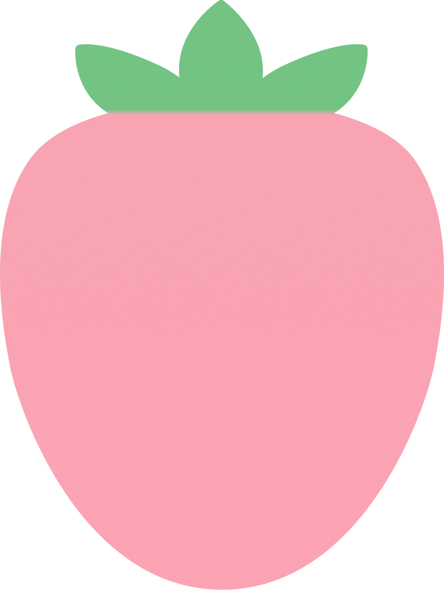
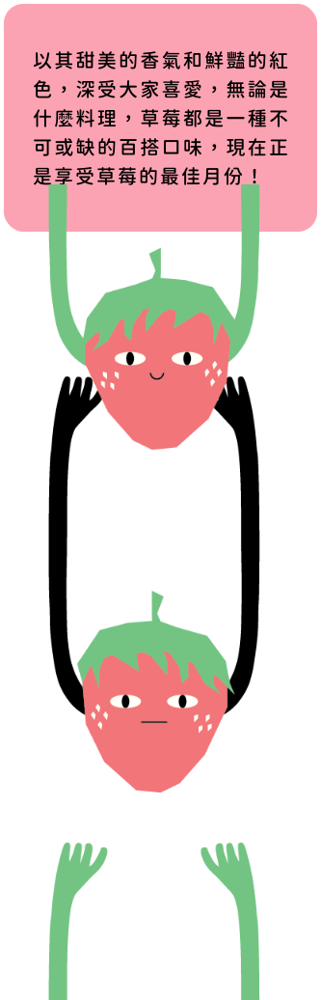
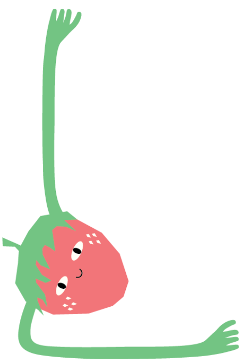
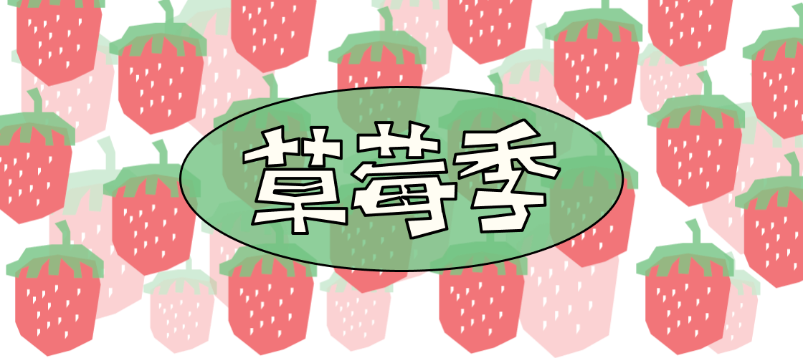
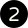
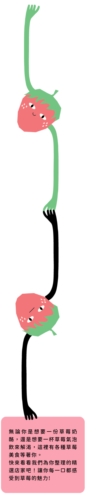

<!DOCTYPE html>
<html lang="zh-Hant-TW">

<head>
    <meta charset="UTF-8">
    <meta http-equiv="X-UA-Compatible" content="IE=edge">
    <meta name="viewport" content="width=device-width, initial-scale=1.0">
    <script crossorigin src="https://unpkg.com/react@18/umd/react.development.js"></script>
    <script crossorigin src="https://unpkg.com/react-dom@18/umd/react-dom.development.js"></script>
    <script src="https://unpkg.com/@babel/standalone/babel.min.js"></script>
    <script src="https://cdnjs.cloudflare.com/ajax/libs/axios/0.27.2/axios.min.js"></script>
    <title>草莓季主題頁面</title>
    <link rel="stylesheet" href="./css/nav-footer-general.css">
    <link rel="stylesheet" href="./css/common.css">
    <link rel="stylesheet" href="./css/style-xpluso.css">
</head>

<body class="themeSeason">
    <!-- 跟元素的地方 -->
    <div id="root"></div>
    <!--JSX -->
    <script type="text/babel">

        function Store(props) {
            return <>
                <div className="store">
                    <h2>{props.storeName}</h2>

                    <a href="#" className="thing" >
                        <div className="col">
                            <div className="photo mask">
                                {/*<!-- 草莓遮色片 --*/}
                                
                            </div>
                            <div className="straw">
                                { /*<!-- 底圖草莓 --*/}
                                
                            </div>
                        </div>
                    </a>

                    <h3>{props.product}</h3>
                    <div className="slogan">
                        
                        <h5>{props.slogan}</h5>
                        
                    </div>
                </div>
            </>
        }

        (async () => {

            // 獲取CityCountyData.json的數據
            const response = await axios.get('./json/strawbarry2.json');
            const strawbarryData = response.data;
            function App() {
                return <>
                    <div className="themeSeason">
                        <div id="underNev">

                            {/*左區塊*/}
                            <div id="left-block" className="block">

                                <figure id="straw-1">
                                    
                                </figure>
                                <figure id="straw-2">
                                    
                                </figure>
                            </div>


                            {/*中間區塊 */}
                            <div id="themeBody">

                                


                                <div>
                                    {Array.from({ length: 3 }).map((_, blockIndex) => {
                                        {/*Array.from({ length: 3 })：建立一個長度為 3 的陣列，索引為blockIndex，表示我們想要 3 個 storeBlock區塊。*/ }

                                        const storesInBlock = strawbarryData.slice(blockIndex * 3, blockIndex * 3 + 3);
                                        {/*storesInBlock代表每顆草莓，slice(開始索引,結束索引)，當顯示第一個區塊時Array blockIndex=0，顯示第1到3的草莓*/ }


                                        return (
                                            <div className="storeBlock" key={blockIndex}>
                                                {storesInBlock.map((straw, index) => (
                                                    <Store
                                                        key={index}
                                                        storeName={straw.storeName}
                                                        img={straw.imgSrc}
                                                        product={straw.product}
                                                        slogan={straw.slogan}
                                                    />
                                                ))}
                                            </div>
                                        );
                                    })}
                                </div>


                                <div id="page-choose">
                                    <div class="pageChoose-pre"><a href="./themeSeason-react-new.html"></a></div>
                                    <a href="./themeSeason-react-new.html"></a>
                                    <a href="./themeSeason-react-new2.html"></a>
                                    <a href="./themeSeason-react-new3.html"></a>
                                    <div class="pageChoose-next"><a href="./themeSeason-react-new3.html"></a></div>

                                </div>
                            </div>

                            {/*右區塊*/}
                            <div id="right-block" className="block">
                                <figure id="straw-3">
                                    
                                </figure>
                            </div>

                        </div>
                    </div>
                </>

            }


            ReactDOM.createRoot(document.getElementById('root')).render(<App />);
        })();
    </script>
    <script src="./js/navbar.js"></script>
    <script src="./js/footer.js"></script>
</body>

</html>